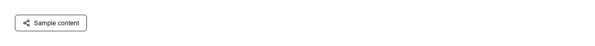

A share control that opens the device's native share sheet and quietly degrades to copying the link where that sheet does not exist. Reach for it wherever a page is worth passing on: an article or blog post, a product or listing, an invite or referral link, a public dashboard or report, a job posting, an event page, a receipt or order confirmation, a shared document or file link, a playlist or video, a profile, a support ticket a user wants to forward, or a generated QR code's target URL. Common asks it answers: 'share button react', 'web share api react', 'navigator.share button', 'native share sheet shadcn', 'share to whatsapp twitter react', 'share button with copy fallback', 'react-share alternative', 'shadcn share component'. shadcn/ui has nothing that touches navigator.share — not in button, not anywhere in its sixty-odd components — so this is written inline every time, and the inline version gets three things wrong that only show up on someone else's device. First, it assumes the API is there. navigator.share is absent on desktop Firefox, absent on any insecure origin, and present or missing on desktop Chrome depending on the OS, so the button has to have a real answer for 'no sheet' rather than throwing: here an unsupported browser, a blocked payload, or any non-cancel rejection falls through to navigator.clipboard.writeText and the label says 'Link copied', the same feedback pulld copy-button gives. Second, it awaits something first. navigator.share only resolves while the click is still the active user gesture, so building the URL or fetching a short link before calling it makes the share reject with NotAllowedError on a button that worked fine in development; this component calls share synchronously as the first thing in the handler and takes an already-resolved url prop, so pass a URL you have, not a promise. Third, it reports a cancel as an error. Dismissing the sheet rejects with AbortError, and a naive catch shows 'Sharing failed' to someone who simply closed it — here AbortError resets the button silently and reports 'cancelled' to onShare instead. The API: url (defaults to the current page URL, read at click time), shareTitle and shareText for the sheet (the native title attribute stays a tooltip), children for the resting label, timeout (default 2000ms) for how long the result state stays, and onShare(outcome) with 'shared' | 'copied' | 'cancelled' | 'failed' for analytics. Feature detection never changes what is rendered, only what the click does, so the server and the first client render agree and there is no hydration mismatch. type='button' so it will not submit a surrounding form, the result is announced through an sr-only aria-live region rather than through the icon swap, both icons are aria-hidden, and the reset timer is cleared on unmount. Styled with shadcn tokens (input, accent, ring) so it follows light and dark mode, className merges rather than fights, and the focus ring is focus-visible. One file, two lucide icons, no share library.

Rendered on the shadcn default neutral palette with harness-generated props.
pnpm dlx shadcn@4.21.0 add @pulld/share-button
| licence | POINTER |
|---|---|
| primitive base | none |
| type | registry:ui |
| files | src/components/ui/share-button.tsx |
| npm deps pulled | none beyond the pre-installed peer set |
| registry deps | — |
| semantic / palette / hex | 4 / 0 / 0 |
| writes shared ui/ | yes — can overwrite the project’s own primitives |